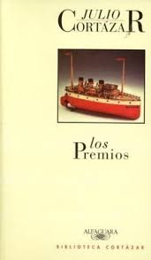
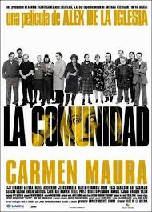
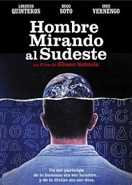
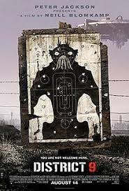
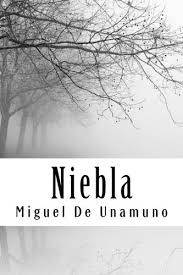

|  |
Reseña de Fiodor¿Qué hace un autor con la gente vulgar, absolutamente vulgar, cómo
ponerla ante sus lectores y cómo volverla interesante? Es imposible dejarla siempre fuera de
la
ficción, pues la gente vulgar es en todos los momentos la llave y el punto esencial en la
cadena
de asuntos humanos: si la suprimimos se pierde toda probabilidad de verdad.
|
|
|  |
Reseña de JuanaLas comunidades de propietarios dan mucho juego en la comedia, pero
esto
no es una película de humor al uso, pues tiene todo el estilo del director. Tiene momentos
de
comedia negra pero también llega a ser un auténtico thriller casi de terror, cuando los
personajes se vuelven tan desquiciados que esto ya es una pura locura en la que cualquier
cosa
puede pasar.
Sin duda, el mayor acierto es un estupendo reparto encabezado por Carmen Maura, estupenda
actriz
que deriva su personaje de la normalidad al más puro caos.
Y también hay mucha crítica social sobre el odio camuflado y la capacidad de hacer el mal
que
tiene el ser humano cuando se empeña en algo, especialmente la codicia económica.
|
|
|  |
Reseña de JuanProfunda obra acerca de la naturaleza trascendente de lo humano, que
juega a moverse entre lo inmanente de este mundo y lo extraterrestre o trascendente que
otros
seres más evolucionados pudieran enseñarnos desde un lejano espacio exterior.
|
|
|  |
Reseña de MariaAcabo de salir del estreno en EE.UU. de Distrito 9.
Salgo FELIZ de la vida porque me acabo de entretener como hacía mucho tiempo que no lo
hacía.
Peter Jackson nos plantea una auténtica aventura atrevida y diferente, brillantemente
ejecutada
por Blomkamp.
El formato cámara en mano tipo reportaje funciona perfectamente en District 9. Quizás sea
algo
personal (me encanta The Blair Witch Project o REC), pero este estilo de planificación te
mete
en la peli desde el primer minuto.
|
|
|  |
Reseña de AnaLas novelas como Niebla son ya, quizá, imposibles hoy día; el nivel de
reflexión y pensamiento que Miguel de Unamuno alcazó con esta obra cumbre de la literatura
es
difícil de repetir, entre otras cosas por la ausencia de intención especulativa. Bien es
cierto
que el paso del tiempo ha dejado algunos de los elementos que aparecen un tanto obsoletos,
pero
la apuesta metanarrativa del autor sigue siendo arriesgada y brillante, siendo el libro una
muestra ejemplar de la profundidad intelectual que puede darse en la ficción.
|
|